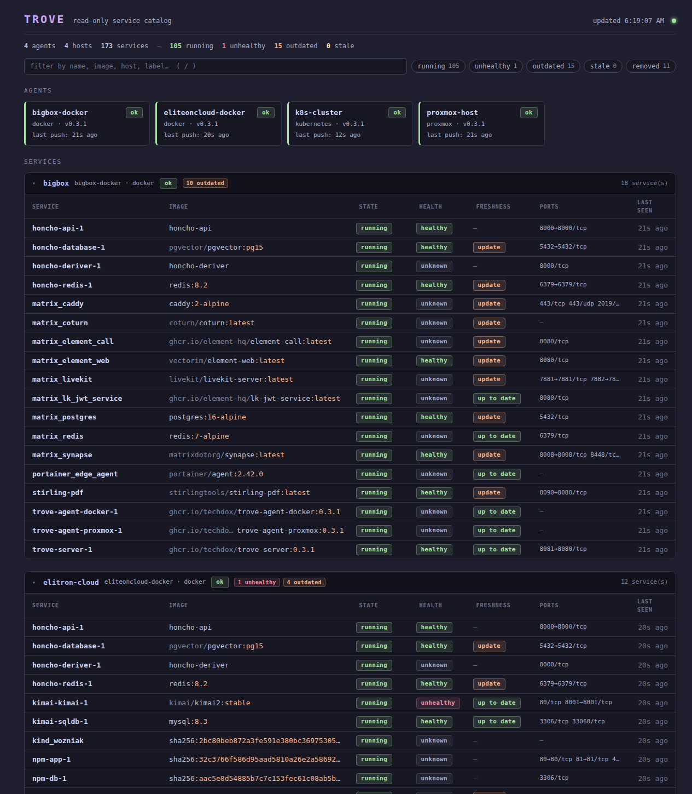

↳
Cross-platform service catalog
Normalize containers, Kubernetes workloads, Proxmox VMs/LXCs, and systemd units into one dense dashboard grouped by host.
Open-source · MIT licensed · Homelab friendly
Trove is a read-only service catalog for Docker, Kubernetes, Proxmox, and Linux hosts. Agents push what they see to one server, so you get health, image freshness, heartbeats, and alerts without giving a dashboard control over your infrastructure.

What it gives you
Normalize containers, Kubernetes workloads, Proxmox VMs/LXCs, and systemd units into one dense dashboard grouped by host.
Track Docker healthchecks, Kubernetes readiness, running state, and agent staleness when a host goes quiet.
See which services are behind their running tag. Registry checks are batched, cached, and rate-limit aware.
Webhook, Discord, ntfy, and email digest support with recovery notices, flap suppression, and transition-aware alerting.
Fast vanilla JS UI with search, filters, details, keyboard navigation, and no frontend build pipeline to babysit.
Static binaries or containers, SQLite storage, automatic schema migrations, and tiny read-only agents.
How it works
Trove's architecture is deliberately boring: local read-only agents collect state and POST full snapshots to a central server every 30 seconds.
Real dashboard
Not a toy demo with three services. Trove is designed for the normal chaos: multiple Docker hosts, K8s workloads, Proxmox machines, healthchecks, stale agents, and a few containers that definitely need an update.
Install
mkdir trove && cd trove
curl -fsSLO https://raw.githubusercontent.com/techdox/trove/main/examples/docker-compose.yml
export TROVE_TOKEN=trove_$(openssl rand -hex 24)
docker compose up -dNo magic. No control plane. No nonsense.